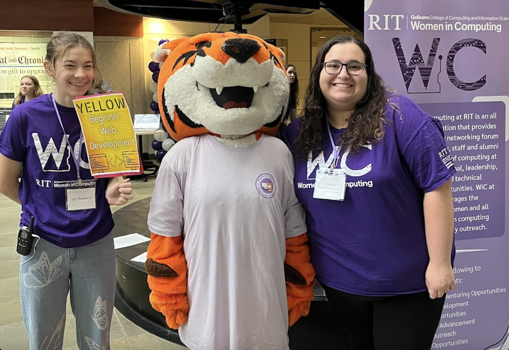
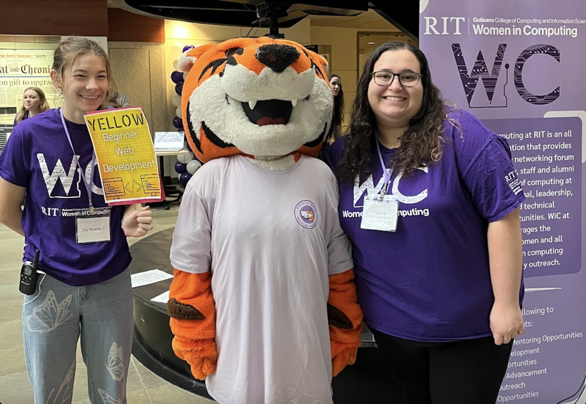

Who am I?
Hello! I am currently a second year enrolled in the Honors and accelerated Master/Bachelor's program at Rochester Institute of Technology (RIT), majoring in Bioinformatics and Computational Biology and minoring in Computer Science and Mathematics. My journey is driven by a profound passion for exploring the intersection of biological sciences and computer technology.
I am eager to connect with professionals, researchers, and fellow students who share my enthusiasm for bioinformatics. Don't hesitate to reach out: lgr4641@gmail.rit.edu


 
